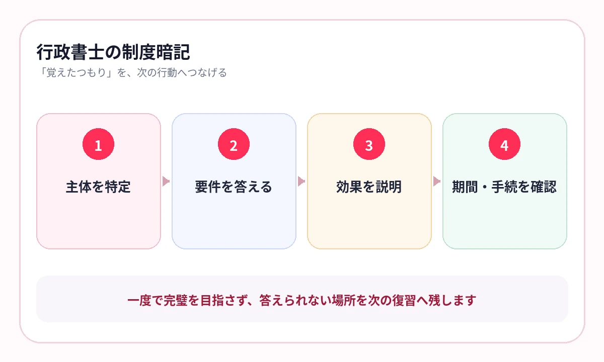

条文の言葉は覚えたのに、事例の誰に、どの制度を当てはめるかで迷っていませんか？
行政書士試験では、憲法、行政法、民法、商法などの法令知識を、択一式だけでなく記述式でも使います。
用語の定義だけを覚えると、問題文の主体や時点が変わったときに判断できません。制度を「誰が、どの要件で、どんな効果を得るか」まで一つにします。
公式の試験科目から、知識の地図を作る
行政書士試験の法令等科目では、憲法、行政法、民法、商法、基礎法学が出題され、法令等は択一式と記述式で問われます。
行政法
処分、手続、不服申立て、訴訟、賠償、自治を制度ごとに整理します。
民法
当事者、要件、効果、第三者、時効・期間をつなぎます。
憲法・商法等
権利、統治、会社・商行為の基本概念と要件を比較します。
条文は「穴埋め」だけで終わらせない
重要語句を正確に覚えることは必要です。ただし、条文の一部を答えたら、その規定がどんな事例で使われるかまで確認します。
- 誰が主張・申立て・処分するか
- 成立・行使の要件は何か
- 法律上どんな効果が生じるか
- どの手続を使うか
- 期限・期間・起算点は何か
言葉を覚えたら、必ず「誰に、何が起きる規定か」を続けて答えます。
{kind=link}

似た制度は、縦ではなく横に比べる
行政法では、不服申立てと行政事件訴訟。民法では、取消しと無効、解除と取消し、各種の担保や代理など、似た制度の区別が問われます。
| 比較軸 | 確認する内容 |
|---|---|
| 主体 | 誰が利用・主張できるか |
| 対象 | 何に対して使う制度か |
| 要件 | 成立に必要な事実は何か |
| 効果 | 遡及、将来、第三者への影響 |
| 期間・手続 | いつまでに、どこへ、どの方法で行うか |
テキストの比較表をそのまま残し、一方の制度名や要件を隠して答えます。
横にスワイプして画像を確認できます


記述式は、40字を書く前に核を出す
記述式の練習で、いきなり文章を完成させようとすると、必要な要件が抜けます。まず核になる語句を取り出します。
問われた制度を特定
行政法か民法か、どの制度が問題かを決めます。
主体と行為を出す
誰が、誰に、何をするかを短く書きます。
要件と効果を出す
必要な条件と、求められる法的効果を並べます。
字数へ整える
最後に助詞と語順を整え、40字程度へまとめます。
記述式の前段階は作文ではなく、必要語句を見ないで取り出す練習です。
過去問の誤答を、制度の比較ページへ戻す
AI暗記シートでは、法律テキストやPDFの重要語句、要件、期間を隠して出題できます。科目・制度・年度を教材名へ入れ、択一で迷ったページへ戻ります。
法改正や判例変更へ対応するため、受験年度の教材を使い、古いページを混ぜないようにします。
- 行政法｜審査請求と訴訟｜比較
- 民法｜意思表示｜第三者
- 民法｜時効｜期間と起算点
- 憲法｜人権｜審査基準
よくある質問
条文を丸暗記する必要はありますか？
重要語句の正確さは必要ですが、主体・要件・効果・手続までつなげて、事例で使える形にします。
記述式は暗記で対応できますか？
必要な制度とキーワードを取り出す部分は暗記が土台です。その後、過去問で事例への当てはめと字数調整を練習します。
法改正はどう管理しますか？
受験年度の公式案内と対応教材を使い、保存ページへ年度を付け、古い内容と混在させないようにします。
参考情報
試験範囲・制度は公式情報、復習方法は学習科学の研究を参照しています。
条文の言葉を、事例で使える知識へ
主体・要件・効果を、見ないで取り出す
法律テキストやPDFの重要語句を隠し、制度比較と期間を反復。択一で迷ったページを次の学習へ残せます。
iPhone・iPad対応／3枚まで無料保存／継続利用は800円の買い切り